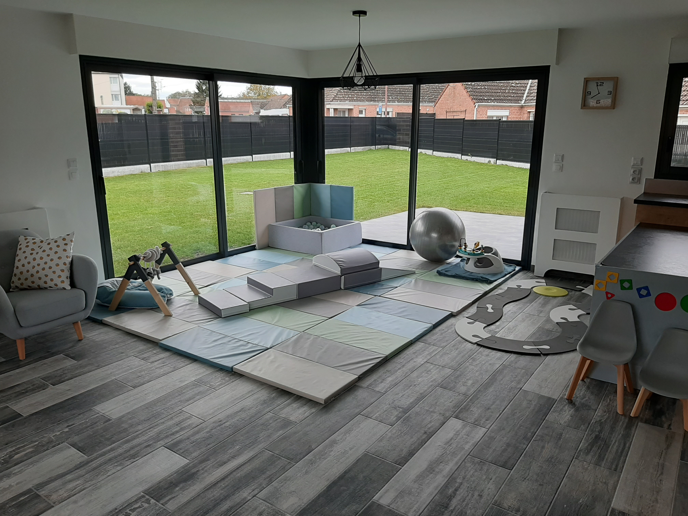

La petite histoire...
Nous sommes trois personnes à l'origine de ce projet, Sylvie, Juliette et Camille et avons toutes les trois fait une reconversion pour faire de notre passion notre métier. Un plein pied est entiérement dédié et adapté pour l'accueil de vos petits bouts. Allier nos compétences, nos avis, nos réflexions, notre bonne entente, ne pas travailler seule mais au sein d'une équipe solidaire et complémentaire, séparer la vie privée et la vie professionnelle, prendre le temps pour chaque enfant et que chaque enfant prenne son temps pour évoluerà son rythme est NOTRE projet. L'enfant trouvera au sein de notre MAM un cadre de vie sécurisant, respectueux et convivial, chaque enfant est unique et possède une personnalité propre. Nous respectons donc sa personnalité, son rythme et ses particularités (sommeil,alimentation,besoins,gouts,préférences...)
M.A.M.
3 lettres pour un grand projet - Maison d'Assistantes Maternelles
Si on résume la loi n°2010-625 du 09 juin 2010 relative à la création des maisons d'assistantes
maternelles, une MAM est un regroupement de 2,3,4 assistantes maternelles agrés par le
conseil général (du lieu d'implantation) au sein d'un même local.
Notre MAM permet d'accueillir au maximu 16 enfants pour 4 assistantes maternelles.
La chance de travailler au sein d'une équipe que nous avons choisise et avec laquelle nous avons
parcouru un long chemin de réflexions pour offrir un accueil de qualités pour les enfants et les
familles.
Nos objectifs
- Travailler en équipe est primordial dans une MAM. Il est essentiel d'élaborer Notre projet en commun et que toute l'équipe adhère aux objectifs définis.
- Travailler en étroite collaboration avec les parents afin d'offrir à chaque enfant un accueil chaleureux le plus individualisé possible.
- Permettre à chaque enfant de s'initier à la vie en collectivité en douceur et anticiper sa scolarisation en créant un climat de confiance et de sécurité
- Accueillir et accompagner votre enfant à son rythme, dans l'acquisition progressive de son autonomie en favorisant son épanouissement et son bien être
- Proposer des activités selon ses désirs, ses besoins, ses capacités et en fonction de son âge.
- Être continuellement à l'écoute et attentive aux besoins des enfants.
- Valoriser les liens parents-enfants, les aider à vivre l'expérience de la séparation
- Favoriser une bonne communication